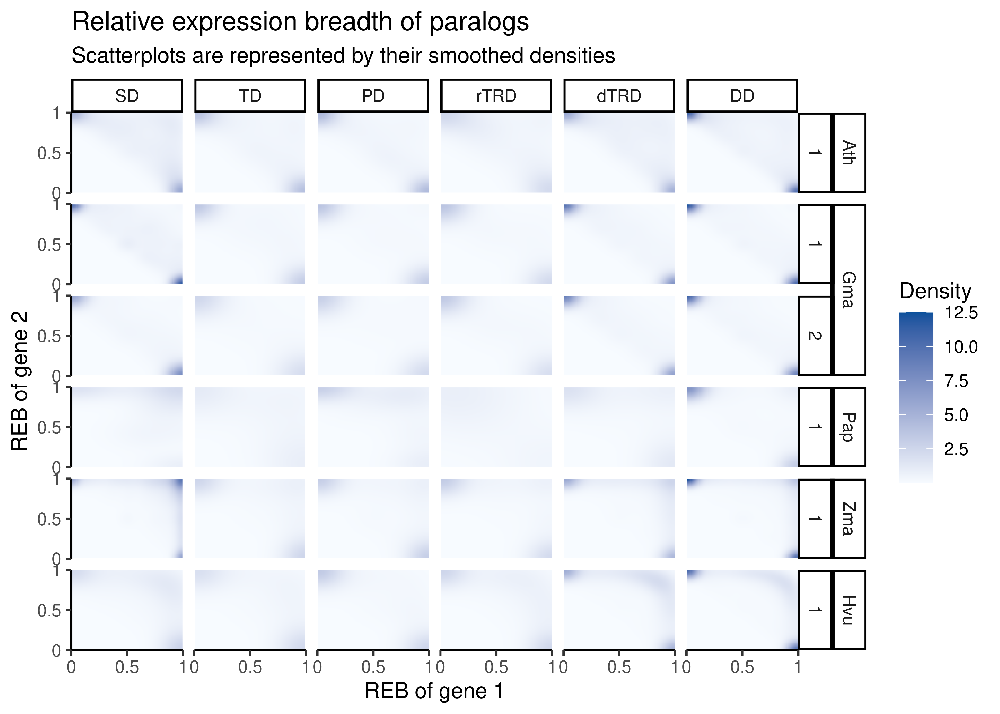
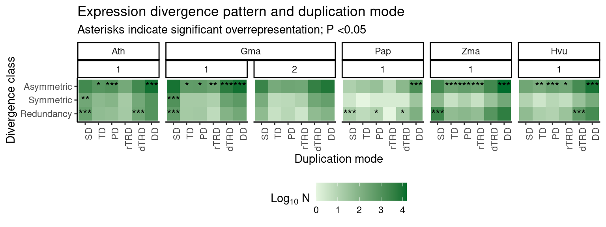

library(here)
library(SpatialExperiment)
library(SummarizedExperiment)
library(tidyverse)
set.seed(123) # for reproducibility
options(timeout = 1e6) # to download large data files
# Load helper functions
source(here("code", "utils.R"))
# Plot background
bg <- grid::linearGradient(colorRampPalette(c("gray90", "white"))(100))6 Classifying paralogs into divergence classes
Here, we will compare relative expression breadths (i.e., frequency of cell types/spatial domains in which genes in a pair is expressed), as in Casneuf et al. (2006), to assign paralogs to divergence classes.
We will start by loading the required packages.
We will also load some required objects created in previous chapters.
# Load `SpatialExperiment` objects
ath_spe <- readRDS(here("products", "result_files", "spe", "spe_ath.rds"))
gma_spe <- readRDS(here("products", "result_files", "spe", "spe_gma.rds"))
pap_spe <- readRDS(here("products", "result_files", "spe", "spe_pap.rds"))
zma_spe <- readRDS(here("products", "result_files", "spe", "spe_zma.rds"))
hvu_spe <- readRDS(here("products", "result_files", "spe", "spe_hvu.rds"))
hvu_spe <- lapply(hvu_spe, function(x) return(x[, !is.na(x$tissue)]))
spe_all <- list(
ath = ath_spe,
gma = gma_spe,
pap = pap_spe,
zma = zma_spe,
hvu = hvu_spe
)
# Read duplicated gene pairs with age-based group classifications
pairs_age <- readRDS(here("products", "result_files", "pairs_by_age_group.rds"))6.1 Calculating relative expression breadths
Now, we will calculate relative expression breadths. For a gene pair p, the relative expression breadth of each gene g will be the number of spatial domains in which gene g is expressed, divided by the total number of domains in which either one of the genes in pair p is expressed.
# Define helper function to calculate relative expression breadth
#' Calculate relative expression breadth for each gene in each gene pair
#'
#' @param spe A SpatialExperiment object.
#' @param pairs
#' @param cell_type Character, name of the column with cell type information.
#' @param min_prop Numeric, minimum proportion of non-zero spots to classify
#' gene as detected. Default: 0.01.
#'
#' @return A data as in \strong{pairs}, but with two extra variables
#' named \strong{reb1}, \strong{reb2}.
#'
calculate_reb <- function(spe, pairs, cell_type = "cell_type", min_prop = 0.01) {
# Get cell types in which each gene is detected
prop_detected <- scuttle::aggregateAcrossCells(
spe, statistics = "prop.detected",
ids = spe[[cell_type]]
) |>
assay()
detected <- apply(prop_detected, 1, function(x) {
return(names(x[x >= min_prop]))
})
# Calculate relative expression breadth for each gene in each pair
rebs <- Reduce(rbind, lapply(seq_len(nrow(pairs)), function(x) {
ct1 <- detected[[pairs$dup1[x]]]
ct2 <- detected[[pairs$dup2[x]]]
n <- length(union(ct1, ct2))
eb_df <- data.frame(
reb1 = length(ct1) / n,
reb2 = length(ct2) / n
)
return(eb_df)
}))
final_pairs <- cbind(pairs, rebs)
return(final_pairs)
}
# For each gene of a duplicate pair, calculate relative expression breadth
rebs <- list(
Ath = lapply(spe_all$ath, calculate_reb, pairs = pairs_age$ath) |>
bind_rows(.id = "sample"),
Gma = lapply(spe_all$gma, calculate_reb, pairs = pairs_age$gma, cell_type = "annotation") |>
bind_rows(.id = "sample"),
Pap = lapply(spe_all$pap, calculate_reb, pairs = pairs_age$pap, cell_type = "clusters") |>
bind_rows(.id = "sample"),
Zma = lapply(spe_all$zma, calculate_reb, pairs = pairs_age$zma, cell_type = "cell_type") |>
bind_rows(.id = "sample"),
Hvu = lapply(spe_all$hvu, calculate_reb, pairs = pairs_age$hvu, cell_type = "tissue") |>
bind_rows(.id = "sample")
)
rebs <- bind_rows(rebs, .id = "species")
# Get mean reb for each gene in a pair across samples
mean_rebs <- rebs |>
mutate(pair = str_c(dup1, dup2, sep = "_")) |>
group_by(pair) |>
mutate(
mean_reb1 = mean(reb1, na.rm = TRUE),
mean_reb2 = mean(reb2, na.rm = TRUE)
) |>
ungroup() |>
dplyr::select(-c(sample, reb1, reb2)) |>
distinct() |>
dplyr::select(-pair) |>
mutate(
species_peak = str_c(species, peak, sep = " - peak "),
species = factor(species, levels = c("Ath", "Gma", "Pap", "Zma", "Hvu")),
type = factor(type, levels = c("SD", "TD", "PD", "rTRD", "dTRD", "DD"))
)Next, we will visualize relative expression breadths for each gene pair by duplication mode using smoothed density representations of scatterplots.
# Plot smoother density representations of scatterplots
p_mean_reb <- ggplot(mean_rebs, aes(x = mean_reb1, y = mean_reb2)) +
stat_density_2d(
geom = "raster",
aes(fill = after_stat(density)),
contour = FALSE
) +
scale_fill_gradient(low = "#F7FBFF", high = "#08519C") +
ggh4x::facet_nested(
cols = vars(type),
rows = vars(species, peak)
) +
scale_x_continuous(
limits = c(0, 1), breaks = seq(0, 1, 0.5), labels = c(0, 0.5, 1), expand = c(0, 0)
) +
scale_y_continuous(
limits = c(0, 1), breaks = seq(0, 1, 0.5), labels = c(0, 0.5, 1), expand = c(0, 0)
) +
theme_classic() +
theme(panel.spacing = unit(0.2, "cm")) +
labs(
x = "REB of gene 1", y = "REB of gene 2", fill = "Density",
title = "Relative expression breadth of paralogs",
subtitle = "Scatterplots are represented by their smoothed densities"
)
p_mean_reb
The figure shows that most duplicates diverge asymmetrically. However, for some species (e.g., orchid and maize), a large fraction of segmental duplicates display redundancy at the expression level.
6.2 Comparing relative expression breadth by mode
Next, we will classify gene pairs in three classes based on their relative expression breadths, and then compare the number of genes in each class by duplication mode. The classes and their definitions are:
- Redundancy: both pairs with REB >0.70.
- Assymetric divergence: one gene with REB >0.7, and the other gene with REB <0.3.
- Symmetric divergence: both genes with REB between 0.3 and 0.7.
We will with the classification per se.
# Classify pairs based on REB
reb_classes <- mean_rebs |>
filter(
!is.nan(mean_reb1),
!is.na(mean_reb1),
!is.nan(mean_reb2),
!is.na(mean_reb2)
) |>
mutate(
class = case_when(
mean_reb1 >0.7 & mean_reb2 >0.7 ~ "Redundancy",
mean_reb1 >0.7 & mean_reb2 <0.3 ~ "Asymmetric",
mean_reb2 >0.7 & mean_reb1 <0.3 ~ "Asymmetric",
mean_reb1 >0.3 & mean_reb1 <0.7 &
mean_reb2 > 0.3 & mean_reb2 <0.7 ~ "Symmetric",
TRUE ~ "Undefined"
)
) |>
filter(class != "Undefined") |>
as.data.frame()Then, we will test for significant associations between each class and duplication modes.
# Test for overrepresentation of REB classes in duplicates from each dup mode
reb_classes_split <- split(reb_classes, reb_classes$species_peak)
ora_dupmode_class <- lapply(reb_classes_split, function(x) {
# Get list of all duplicate pairs
dups <- x |>
mutate(pair = str_c(dup1, dup2, sep = "_")) |>
select(pair, type)
# Get a list of genes for each class
classes_list <- x |>
mutate(pair = str_c(dup1, dup2, sep = "_")) |>
select(pair, class)
classes_list <- split(classes_list, classes_list$class)
# Perform ORA
ora_dfs <- lapply(classes_list, function(y) {
df <- HybridExpress::ora(
genes = unique(y$pair),
annotation = dups,
background = dups$pair,
min_setsize = 2,
max_setsize = 1e8,
alpha = 1
)
return(df)
}) |>
bind_rows(.id = "class")
return(ora_dfs)
}) |>
bind_rows(.id = "species_peak")Next, we will plot the frequencies of duplicates in each class by mode.
# Plot frequency of duplicates (by mode) in each class
p_reb_classes <- ora_dupmode_class |>
mutate(
genes = log10(genes + 1),
symbol = case_when(
padj > 0.05 ~ "",
padj > 0.01 ~ "*",
padj > 0.001 ~ "**",
!is.na(padj) ~ "***",
TRUE ~ NA_character_
),
peak = str_replace_all(species_peak, ".* - peak ", ""),
species = str_replace_all(species_peak, " - .*", ""),
species = factor(species, levels = c("Ath", "Gma", "Pap", "Zma", "Hvu")),
term = factor(term, levels = c("SD", "TD", "PD", "rTRD", "dTRD", "DD")),
class = factor(class, levels = c("Redundancy", "Symmetric", "Asymmetric"))
) |>
ggplot(aes(x = term, y = class)) +
geom_tile(aes(fill = genes)) +
scale_fill_gradient(low = "#E5F5E0", high = "#006D2C") +
geom_text(aes(label = symbol)) +
ggh4x::facet_nested(
cols = vars(species, peak)
) +
theme_classic() +
labs(
title = "Expression divergence pattern and duplication mode",
subtitle = "Asterisks indicate significant overrepresentation; P <0.05",
x = "Duplication mode", y = "Divergence class",
fill = expression(Log[10] ~ N)
) +
theme(
legend.position = "bottom",
axis.text.x = element_text(angle = 90, hjust = 1)
)
p_reb_classes
The figure shows that most pairs derived from small-scale duplications (TD, PD, TRD, and DD) are overrepresented in pairs with asymmetric divergence. Segmental duplicates (and sometimes transposed duplicates) are mostly overrepresented in pairs that display redundancy and symmetric divergence.
Saving objects
Finally, we will save important objects to reuse later.
# Objects
## Relative expression breadths
saveRDS(
rebs, compress = "xz",
file = here("products", "result_files", "relative_expression_breadth.rds")
)
# Plots
## Smoothed densities of relative expression breadths
saveRDS(
p_mean_reb, compress = "xz",
file = here("products", "plots", "smoothed_densities_relative_expression_breadth.rds")
)
## ORA - duplication mode and divergence classes
saveRDS(
p_reb_classes, compress = "xz",
file = here("products", "plots", "ORA_dupmode_and_divergence_class.rds")
)Session info
This document was created under the following conditions:
─ Session info ───────────────────────────────────────────────────────────────
setting value
version R version 4.4.1 (2024-06-14)
os Ubuntu 22.04.4 LTS
system x86_64, linux-gnu
ui X11
language (EN)
collate en_US.UTF-8
ctype en_US.UTF-8
tz Europe/Brussels
date 2025-04-23
pandoc 3.2 @ /usr/lib/rstudio/resources/app/bin/quarto/bin/tools/x86_64/ (via rmarkdown)
─ Packages ───────────────────────────────────────────────────────────────────
package * version date (UTC) lib source
abind 1.4-5 2016-07-21 [1] CRAN (R 4.4.1)
backports 1.5.0 2024-05-23 [1] CRAN (R 4.4.1)
beeswarm 0.4.0 2021-06-01 [1] CRAN (R 4.4.1)
Biobase * 2.64.0 2024-04-30 [1] Bioconductor 3.19 (R 4.4.1)
BiocGenerics * 0.50.0 2024-04-30 [1] Bioconductor 3.19 (R 4.4.1)
broom 1.0.6 2024-05-17 [1] CRAN (R 4.4.1)
car 3.1-2 2023-03-30 [1] CRAN (R 4.4.1)
carData 3.0-5 2022-01-06 [1] CRAN (R 4.4.1)
cli 3.6.3 2024-06-21 [1] CRAN (R 4.4.1)
colorspace 2.1-0 2023-01-23 [1] CRAN (R 4.4.1)
crayon 1.5.3 2024-06-20 [1] CRAN (R 4.4.1)
DelayedArray 0.30.1 2024-05-07 [1] Bioconductor 3.19 (R 4.4.1)
digest 0.6.36 2024-06-23 [1] CRAN (R 4.4.1)
dplyr * 1.1.4 2023-11-17 [1] CRAN (R 4.4.1)
evaluate 0.24.0 2024-06-10 [1] CRAN (R 4.4.1)
fansi 1.0.6 2023-12-08 [1] CRAN (R 4.4.1)
farver 2.1.2 2024-05-13 [1] CRAN (R 4.4.1)
fastmap 1.2.0 2024-05-15 [1] CRAN (R 4.4.1)
forcats * 1.0.0 2023-01-29 [1] CRAN (R 4.4.1)
generics 0.1.3 2022-07-05 [1] CRAN (R 4.4.1)
GenomeInfoDb * 1.40.1 2024-05-24 [1] Bioconductor 3.19 (R 4.4.1)
GenomeInfoDbData 1.2.12 2024-07-24 [1] Bioconductor
GenomicRanges * 1.56.1 2024-06-12 [1] Bioconductor 3.19 (R 4.4.1)
ggbeeswarm 0.7.2 2023-04-29 [1] CRAN (R 4.4.1)
ggh4x 0.2.8 2024-01-23 [1] CRAN (R 4.4.1)
ggplot2 * 3.5.1 2024-04-23 [1] CRAN (R 4.4.1)
ggpubr 0.6.0 2023-02-10 [1] CRAN (R 4.4.1)
ggsignif 0.6.4.9000 2024-12-12 [1] Github (const-ae/ggsignif@705495f)
glue 1.7.0 2024-01-09 [1] CRAN (R 4.4.1)
gtable 0.3.5 2024-04-22 [1] CRAN (R 4.4.1)
here * 1.0.1 2020-12-13 [1] CRAN (R 4.4.1)
hms 1.1.3 2023-03-21 [1] CRAN (R 4.4.1)
htmltools 0.5.8.1 2024-04-04 [1] CRAN (R 4.4.1)
htmlwidgets 1.6.4 2023-12-06 [1] CRAN (R 4.4.1)
httr 1.4.7 2023-08-15 [1] CRAN (R 4.4.1)
IRanges * 2.38.1 2024-07-03 [1] Bioconductor 3.19 (R 4.4.1)
jsonlite 1.8.8 2023-12-04 [1] CRAN (R 4.4.1)
knitr 1.48 2024-07-07 [1] CRAN (R 4.4.1)
labeling 0.4.3 2023-08-29 [1] CRAN (R 4.4.1)
lattice 0.22-6 2024-03-20 [1] CRAN (R 4.4.1)
lifecycle 1.0.4 2023-11-07 [1] CRAN (R 4.4.1)
lubridate * 1.9.3 2023-09-27 [1] CRAN (R 4.4.1)
magick 2.8.4 2024-07-14 [1] CRAN (R 4.4.1)
magrittr 2.0.3 2022-03-30 [1] CRAN (R 4.4.1)
MASS 7.3-61 2024-06-13 [1] CRAN (R 4.4.1)
Matrix 1.7-0 2024-04-26 [1] CRAN (R 4.4.1)
MatrixGenerics * 1.16.0 2024-04-30 [1] Bioconductor 3.19 (R 4.4.1)
matrixStats * 1.3.0 2024-04-11 [1] CRAN (R 4.4.1)
munsell 0.5.1 2024-04-01 [1] CRAN (R 4.4.1)
patchwork 1.2.0 2024-01-08 [1] CRAN (R 4.4.1)
pillar 1.9.0 2023-03-22 [1] CRAN (R 4.4.1)
pkgconfig 2.0.3 2019-09-22 [1] CRAN (R 4.4.1)
purrr * 1.0.2 2023-08-10 [1] CRAN (R 4.4.1)
R6 2.5.1 2021-08-19 [1] CRAN (R 4.4.1)
Rcpp 1.0.13 2024-07-17 [1] CRAN (R 4.4.1)
readr * 2.1.5 2024-01-10 [1] CRAN (R 4.4.1)
rjson 0.2.21 2022-01-09 [1] CRAN (R 4.4.1)
rlang 1.1.4 2024-06-04 [1] CRAN (R 4.4.1)
rmarkdown 2.27 2024-05-17 [1] CRAN (R 4.4.1)
rprojroot 2.0.4 2023-11-05 [1] CRAN (R 4.4.1)
rstatix 0.7.2 2023-02-01 [1] CRAN (R 4.4.1)
rstudioapi 0.16.0 2024-03-24 [1] CRAN (R 4.4.1)
S4Arrays 1.4.1 2024-05-20 [1] Bioconductor 3.19 (R 4.4.1)
S4Vectors * 0.42.1 2024-07-03 [1] Bioconductor 3.19 (R 4.4.1)
scales 1.3.0 2023-11-28 [1] CRAN (R 4.4.1)
sessioninfo 1.2.2 2021-12-06 [1] CRAN (R 4.4.1)
SingleCellExperiment * 1.26.0 2024-04-30 [1] Bioconductor 3.19 (R 4.4.1)
SparseArray 1.4.8 2024-05-24 [1] Bioconductor 3.19 (R 4.4.1)
SpatialExperiment * 1.14.0 2024-05-01 [1] Bioconductor 3.19 (R 4.4.1)
stringi 1.8.4 2024-05-06 [1] CRAN (R 4.4.1)
stringr * 1.5.1 2023-11-14 [1] CRAN (R 4.4.1)
SummarizedExperiment * 1.34.0 2024-05-01 [1] Bioconductor 3.19 (R 4.4.1)
tibble * 3.2.1 2023-03-20 [1] CRAN (R 4.4.1)
tidyr * 1.3.1 2024-01-24 [1] CRAN (R 4.4.1)
tidyselect 1.2.1 2024-03-11 [1] CRAN (R 4.4.1)
tidyverse * 2.0.0 2023-02-22 [1] CRAN (R 4.4.1)
timechange 0.3.0 2024-01-18 [1] CRAN (R 4.4.1)
tzdb 0.4.0 2023-05-12 [1] CRAN (R 4.4.1)
UCSC.utils 1.0.0 2024-04-30 [1] Bioconductor 3.19 (R 4.4.1)
utf8 1.2.4 2023-10-22 [1] CRAN (R 4.4.1)
vctrs 0.6.5 2023-12-01 [1] CRAN (R 4.4.1)
vipor 0.4.7 2023-12-18 [1] CRAN (R 4.4.1)
withr 3.0.0 2024-01-16 [1] CRAN (R 4.4.1)
xfun 0.51 2025-02-19 [1] CRAN (R 4.4.1)
XVector 0.44.0 2024-04-30 [1] Bioconductor 3.19 (R 4.4.1)
yaml 2.3.9 2024-07-05 [1] CRAN (R 4.4.1)
zlibbioc 1.50.0 2024-04-30 [1] Bioconductor 3.19 (R 4.4.1)
[1] /home/faalm/R/x86_64-pc-linux-gnu-library/4.4
[2] /usr/local/lib/R/site-library
[3] /usr/lib/R/site-library
[4] /usr/lib/R/library
──────────────────────────────────────────────────────────────────────────────References
Casneuf, Tineke, Stefanie De Bodt, Jeroen Raes, Steven Maere, and Yves Van de Peer. 2006. “Nonrandom Divergence of Gene Expression Following Gene and Genome Duplications in the Flowering Plant Arabidopsis Thaliana.” Genome Biology 7: 1–11.